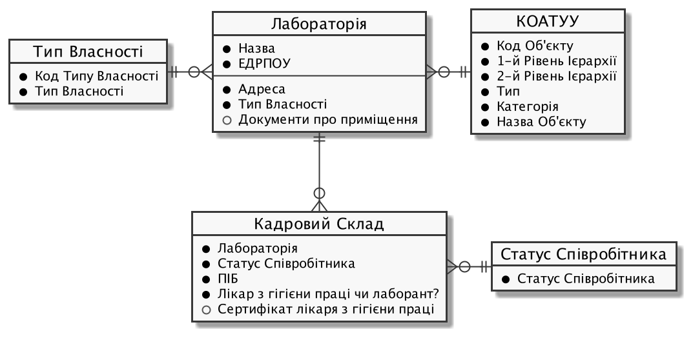

Task 1. Database registry structure modeling
- 1. Objective of the task
- 2. The task
- 3. Development plan for the physical data model
- 4. Creating tables and their relationships
- 5. Creating search conditions for integration with business process forms
- 5.1. Search for a region in the "KOATSU" table.
- 5.2. Search for a locality by name and region code in the "KOATSU" table
- 5.3. Search for property type by name in the "Ownership type" table
- 5.4. Searching laboratories by name or EDRPOU code in the "Laboratory" table
- 5.5. Searching for an employee by name in the "Staff composition" table
- 6. Initial data loading
- 7. Applying the developed model to the database
1. Objective of the task
- The completion of this task aims to:
-
-
Teach how to model database structures.
-
Teach the development of Liquibase XML templates for deploying structures in the database registry.
-
Teach the creation of search conditions in the database for integrating data factory with business processes.
-
2. The task
Create a database structure for storing and processing information from laboratory certifications according to the following logical data model: 
3. Development plan for the physical data model
-
Define primary keys for each entity.
-
Identify secondary keys if present in the entity.
-
Determine mandatory fields.
-
Identify fields or combinations of fields with unique values.
-
Define table and field names in Latin characters.
4. Creating tables and their relationships
-
Using the information defined in the development plan for the physical data model and the corresponding XML template provided below, create an empty file named createTables.xml.
Use the provided createTables.xml file as an example. -
Copy the metadata from the XML template below and add it to your file as is, without any changes.
Example: XML file template<?xml version="1.0" encoding="UTF-8"?> <databaseChangeLog xmlns="http://www.liquibase.org/xml/ns/dbchangelog" xmlns:xsi="http://www.w3.org/2001/XMLSchema-instance" xmlns:ext="http://www.liquibase.org/xml/ns/dbchangelog-ext" xsi:schemaLocation="http://www.liquibase.org/xml/ns/dbchangelog http://www.liquibase.org/xml/ns/dbchangelog/dbchangelog-4.2.xsd http://www.liquibase.org/xml/ns/dbchangelog-ext https://nexus.apps.envone.dev.registry.eua.gov.ua/nexus/repository/extensions/com/epam/digital/data/platform/liquibase-ext-schema/latest/liquibase-ext-schema-latest.xsd"> </databaseChangeLog>https://<link to central Nexus>/nexus/repository/extensions/com/epam/digital/data/platform/liquibase-ext-schema/latest/liquibase-ext-schema-latest.xsd
-
Variable
<link to central Nexus>— path to the Nexus server of central components (should be modified, for example, when moving the registry to another cluster).
Each file with the extension .xml must contain system information at the top, within the
<databaseChangeLog>tag.Alternatively, use the main-liquibase.xml template from the Gerrit repository as an example for copying metadata.
The main-liquibase.xml file serves as an "index" and uses the
<include>directive to link to other necessary XML templates for deploying data structures. -
4.1. Table creation order
Change the order of change sets (changeSet) in the createTables.xml file so that tables with external references to other tables are created after the ones they reference. In other words, the tables for laboratories should be created after the Classifier of objects of administrative-territorial structure of Ukraine (now known as Codifier of administrative-territorial units and territories of territorial communities) and "Ownership type" tables.
Arrange the change sets for table deployment in the following order:
-
"COATSU" (Classifier of objects of administrative-territorial structure of Ukraine: UA-specific)
-
"Ownership type"
-
"Laboratory"
-
"Employee status"
-
"Staff composition"
4.2. Creating "Laboratory" table
As an example, let us consider the process of creating changeSets within the deployment of the physical data model for the "Laboratory" table.
|
At this stage, it is necessary to create a new table with the name "Laboratory." The steps include:
- 1.Creating a changeSet:
-
At this step, it is necessary to create a changeSet — a set of atomic changes in Liquibase.
Inside the
<databaseChangeLog>tag in the createTables.xml file, add a<changeSet>tag after the metadata.Table 1. Mandatory attributes Attribute Value idFor example,
"table laboratory"authorYour full name
Resulting structure:
<databaseChangeLog> ... ... <changeSet id="table laboratory" author="registry owner"> </changeSet> <changeSet id="table ownership" author="registry owner"> </changeSet> ... </databaseChangeLog> - 2. Adding a comment
-
It is preferable but not mandatory to add a
<comment>tag inside the<changeSet>tag to provide an explanation of the specific changes implemented by this changeSet.The resulting structure is expanded as follows:
<databaseChangeLog> ... ... <changeSet id="table laboratory" author="registry owner"> <comment>Creating a "laboratory" table</comment> </changeSet> </databaseChangeLog> - 3. Adding the createTable tag
-
At this step, it is necessary to create an empty table.
Within the
<changeSet>tag, add the<createTable>tag with the table name "Laboratory" in Latin characters.Table 2. Mandatory attributes Attribute Value tableName"laboratory"ext:historyFlag"true"As a result, we expand our structure as follows:
<databaseChangeLog> ... ... <changeSet id="table laboratory" author="registry owner"> <comment>Creating a "laboratory" table</comment> <createTable tableName="laboratory" ext:historyFlag="true"> </createTable> </changeSet> </databaseChangeLog>As part of the regulation verification process, the
historyFlagattribute with a value of true is required when using<createTable>or<addColumn>tags in achangeSet. Therefore, when creating the table, thehistoryFlag=“true” value must be specified.This will generate an additional historical table, and each table will have its specific set of service fields generated.
Detailed information about the
ext:historyFlagattribute is available at the following link:4.Adding the column tag
At this step, you need to specify the columns that the table will contain.
+
For each field defined for the "Laboratory" table in the physical data model development plan, add the <column> tag within the <createTable> tag, specifying the column name and the data type to be stored.
| Attribute | Value |
|---|---|
|
Column name |
|
Data type For example, |
As a result, we expand our structure as follows:
<databaseChangeLog>
...
...
<changeSet id="table laboratory" author="registry owner">
<comment>Creating a "laboratory" table</comment>
<createTable tableName="laboratory" ext:historyFlag="true">
<column name="<назва стовпця>" type="<тип даних>">
</column>
</createTable>
</changeSet>
</databaseChangeLog>+
|
- 5.Adding the constraints tag
-
At this step, you need to specify constraints for each column of the table.
-
For the column defined as the primary key, add the nested
<constraints>tag with the following attributes:
| Attribute | Value |
|---|---|
|
|
|
|
|
For example, Data type of the column: The primary key name should be unique. |
|
Default value for the key. |
+
|
The `nullable="false`" attribute is required for all columns that, according to business logic, do not allow null values. Use ONLY the |
-
For all foreign references, add the
<constraints>tag with attributesforeignKeyName,referencedTableName, andreferencedColumnNames, specifying a unique name for the foreign key, table, and column they refer to:Table 5. Attributes Attribute Value foreignKeyName"fk_<Unique foreign key name>"referencedTableName"<Name of the table being referred to by the foreign key>"referencedColumnNames"<Name of the column in the table being referred to by the foreign key>"At the beginning of the foreignKeyNameattribute value, add the corresponding prefixfk_, indicating the relationship with the external table.When adding foreign keys, pay attention to the order of table creation.
- As a result, we get the following structure:
-
Example: ChangeSet with the tag for creating the
laboratorytable.<databaseChangeLog> ... ... <changeSet id="table laboratory" author="registry owner"> <comment>Creating a "laboratory" table</comment> <createTable tableName="laboratory" ext:historyFlag="true"> <column name="laboratory_id" type="UUID"> <constraints nullable="false" primaryKey="true" primaryKeyName="pk_laboratory_id"/> </column> <column name="name" type="TEXT"> <constraints nullable="false"/> </column> <column name="ownership_id" type="UUID"> <constraints nullable="false" foreignKeyName="fk_laboratory_ownership" referencedTableName="ownership" referencedColumnNames="ownership_id"/> </column> </createTable> </changeSet> </databaseChangeLog>For all fields that should contain only a unique set of values, add the
<constraints>tag with attributesunique="true"anduniqueConstraintName(optional):Example: Creating a table with a unique constraint<changeSet id="table ownership" author="registry owner"> <createTable tableName="ownership" ext:historyFlag="true" remarks="Directory of property ownership forms"> <column name="ownership_id" type="UUID" defaultValueComputed="uuid_generate_v4()"> <constraints nullable="false" primaryKey="true" primaryKeyName="pk_ownership_id"/> </column> <column name="code" type="TEXT" remarks="Код"> <constraints nullable="false"/> </column> <column name="name" type="TEXT" remarks="Назва"> <constraints nullable="false" unique="true"/> </column> </createTable> </changeSet>In cases where multiple fields should form a unique value, after the
<createTable> tag, add the<addUniqueConstraint>tag, specifying thetableNameattribute with the name of the table to which the constraint applies, and thecolumnNamesattribute with a list of fields that, in combination, should be unique.Example: Creating a table with the<addUniqueConstraint>tag<createTable> ... ... </createTable> <addUniqueConstraint tableName="laboratory" columnNames="name,edrpou"/>
|
The process of creating subsequent tables is similar to the example with the "Laboratory" table. The parameter structure for the created tables remains the same for all tables in this task. |
4.3. Creating the "Ownership type" table
Following the procedure used to create the "Laboratory" table, create a table with the name "Ownership type":
-
At the end of the
<databaseChangeLog>tag in the createTables.xml file, add a<changeSet>tag to define the set of changes. -
Inside the
<changeSet>tag, add the<createTable>tag with the table name "Ownership Type" in Latin (e.g., “ownership”). -
Add
<column>tags for each column of the "Ownership Type" table, as defined in the Physical Data Model Development Plan. -
Inside the
<constraints>tag, define the primary key of the table, as well as all mandatory fields.
4.4. Creating the "Employee status" table
Following the procedure used to create the "Laboratory" table, create a table with the name "Employee status":
-
At the end of the
<databaseChangeLog>tag in the createTables.xml file, add a<changeSet>tag to define the set of changes. -
Inside the
<changeSet>tag, add the<createTable>tag with the table name "Employee Status" in Latin (e.g., “staff_status”). -
Add
<column>tags for each column of the "Employee Status" table, as defined in the Physical Data Model Development Plan. -
Inside the
<constraints>tag, define the primary key of the table, as well as all mandatory fields.
4.5. Creating the "Staff composition" table
Following the procedure used to create the "Laboratory" table, create a table with the name "Staff composition":
-
At the end of the
<databaseChangeLog>tag in the createTables.xml file, add a <changeSet> tag to define the set of changes. -
Inside the
<changeSet>tag, add the<createTable>tag with the table name "Staff composition" in Latin (e.g., "staff"). -
Add <column> tags for each column of the "Staff composition" table, as defined in the Physical data model development plan.
-
Inside the
<constraints>tag, define the primary key of the table, all foreign references to other tables, as well as all mandatory fields.
5. Creating search conditions for integration with business process forms
Search Conditions are special objects used by forms and business processes to retrieve a set of data from one or multiple registry tables.
At the database level, they are implemented through views defined by SQL queries to one or multiple tables.
To create search condition, use the ext:createSearchCondition tag developed within the framework of the Liquibase physical data model creation and management extension on the The Platform for state registries.
<changeSet author="registry owner" id="SearchCondition">
<ext:createSearchCondition name="SearchCondition" limit="1">
<ext:table name="table_one" alias="to">
<ext:column name="name" alias="to_name"/>
<ext:column name="type" searchType="equal"/>
<ext:function name="count" alias="cnt" columnName="uuid"/>
</ext:table>
<ext:table name="table_two" alias="tt">
<ext:column name="name" alias="tt_name"/>
<ext:column name="code" searchType="contains"/>
<ext:function name="sum" alias="sm" columnName="code"/>
</ext:table>
<ext:join type="left">
<ext:left alias="to">
<ext:column name="name"/>
</ext:left>
<ext:right alias="tt">
<ext:column name="name"/>
</ext:right>
</ext:join>
<ext:where>
<ext:condition tableAlias="to" columnName="type" operator="eq" value="'char'">
<ext:condition logicOperator="or" tableAlias="to" columnName="type" operator="eq" value="'text'"/>
</ext:condition>
<ext:condition logicOperator="and" tableAlias="tt" columnName="code" operator="similar" value="'{80}'"/>
</ext:where>
</ext:createSearchCondition>
</changeSet>-
Create a separate file named createSearchConditions.xml for search conditions using the same template as createTables.xml.
Use the existing file createSearchConditions.xml as an example. -
Similar to tables, create the following search conditions in separate change sets (
changeSet).
5.1. Search for a region in the "KOATSU" table.
-
Used in the business process: adding laboratory.
-
Search condition name: koatuu_obl_contains_name.
-
Search by field: name, search type: contains.
-
Sorting by field:
name, direction:asc.
<changeSet author="registry owner" id="searchCondition koatuu_obl_contains_name">
<ext:createSearchCondition name="koatuu_obl_contains_name">
<ext:table name="koatuu" alias="k">
<ext:column name="koatuu_id"/>
<ext:column name="code"/>
<ext:column name="name" sorting="asc" searchType="contains"/>
</ext:table>
<ext:where>
<ext:condition tableAlias="k" columnName="type" operator="eq" value="'О'"/>
</ext:where>
</ext:createSearchCondition>
</changeSet>SELECT k.koatuu_id,
k.code,
k.name
FROM koatuu k
WHERE k.type = 'О'::text
ORDER BY k.name;5.2. Search for a locality by name and region code in the "KOATSU" table
-
Used in the business process: adding laboratory.
-
Search condition name:
koatuu-np-starts-with-name-by-obl. -
Search by field:
name, search type:startWith. -
Search by field:
level1, search type:equal. -
Sorting by field:
name, direction:asc.
<changeSet author="registry owner" id="searchCondition koatuu_np_starts_with_name_by_obl">
<ext:createSearchCondition name="koatuu_np_starts_with_name_by_obl" limit="100">
<ext:table name="koatuu" alias="np">
<ext:column name="koatuu_id"/>
<ext:column name="name" searchType="startsWith" sorting="asc"/>
<ext:column name="level1" searchType="equal"/>
</ext:table>
<ext:table name="koatuu" alias="rn">
<ext:column name="name" alias="name_rn"/>
</ext:table>
<ext:join type="left">
<ext:left alias="np">
<ext:column name="level2"/>
</ext:left>
<ext:right alias="rn">
<ext:column name="code"/>
</ext:right>
<ext:condition logicOperator="and" tableAlias="rn" columnName="type" operator="eq" value="'Р'"/>
</ext:join>
<ext:where>
<ext:condition tableAlias="np" columnName="type" operator="eq" value="'НП'"/>
</ext:where>
</ext:createSearchCondition>
</changeSet>SELECT np.koatuu_id,
np.name,
np.level1,
rn.name AS name_rn
FROM koatuu np
LEFT JOIN koatuu rn ON np.level2 = rn.code AND rn.type = 'Р'::text
WHERE np.type = 'НП'::text
ORDER BY np.name;5.3. Search for property type by name in the "Ownership type" table
-
Used in the business process: adding laboratory.
-
Search condition name: ownership-contains-name.
-
Search by field:
name, search type:contains. -
Sorting by field:
name, direction:asc.
<changeSet author="registry owner" id="searchCondition ownership_contains_name">
<ext:createSearchCondition name="ownership_contains_name">
<ext:table name="ownership" alias="o">
<ext:column name="ownership_id"/>
<ext:column name="code"/>
<ext:column name="name" sorting="asc" searchType="contains"/>
</ext:table>
</ext:createSearchCondition>
</changeSet>SELECT o.ownership_id,
o.code,
o.name
FROM ownership o
ORDER BY o.name;5.4. Searching laboratories by name or EDRPOU code in the "Laboratory" table
5.4.1. Example of creating search condition #1
-
Used in the business process: Adding a laboratory.
-
Condition name:
laboratory-equal-edrpou-name-count. -
Search by field:
edrpou, search type:equal. -
Search by field:
name, search type:equal.
<changeSet author="registry owner" id="searchCondition laboratory_equal_edrpou_name_count">
<comment>CREATE search condition laboratory_equal_edrpou_name_count</comment>
<ext:createSearchCondition name="laboratory_equal_edrpou_name_count">
<ext:table name="laboratory">
<ext:function name="count" alias="cnt" columnName="laboratory_id"/>
<ext:column name="edrpou" searchType="equal"/>
<ext:column name="name" searchType="equal"/>
</ext:table>
</ext:createSearchCondition>
</changeSet>SELECT laboratory.edrpou,
laboratory.name,
count(laboratory.laboratory_id) AS cnt
FROM laboratory
GROUP BY laboratory.edrpou,
laboratory.name;5.4.2. Example of creating search condition #2
-
Used in the business process: Adding data to the staff composition.
-
Condition name:
laboratory-start-with-edrpou-contains-name. -
Search by field:
edrpou, search type:startsWith. -
Search by field:
name, search type:contains.
<changeSet author="registry owner" id="searchCondition laboratory_start_with_edrpou_contains_name">
<comment>CREATE search condition laboratory_start_with_edrpou_contains_name</comment>
<ext:createSearchCondition name="laboratory_start_with_edrpou_contains_name">
<ext:table name="laboratory">
<ext:column name="laboratory_id"/>
<ext:column name="edrpou" searchType="startsWith"/>
<ext:column name="name" searchType="contains"/>
</ext:table>
</ext:createSearchCondition>
</changeSet>SELECT laboratory.laboratory_id,
laboratory.edrpou,
laboratory.name
FROM laboratorySELECT laboratory.laboratory_id,
laboratory.edrpou,
laboratory.name
FROM laboratory
WHERE laboratory.name LIKE '%name%' AND laboratory.edrpou LIKE 'edrpou%'
Input parameters: name, edrpou5.5. Searching for an employee by name in the "Staff composition" table
-
Used in the business process: Adding staff.
-
Condition name:
staff-contains-name. -
Search by field:
name, search type:contains. -
Sorting by field:
name, direction:asc.
<changeSet author="registry owner" id="searchCondition staff_contains_name">
<comment>CREATE search condition staff_contains_name</comment>
<ext:createSearchCondition name="staff_contains_name">
<ext:table name="staff_status" alias="s">
<ext:column name="staff_status_id"/>
<ext:column name="name" sorting="asc" searchType="contains"/>
</ext:table>
</ext:createSearchCondition>
</changeSet>SELECT s.staff_status_id,
s.name
FROM staff_status s
ORDER BY s.name;6. Initial data loading
For the proper population and management of data in the registry, reference tables must contain data. Their loading is possible before the registry’s actual operation through the invocation of a special database function. The function can be invoked using an appropriate Liquibase tag –- <sql>.
Example of an XML template with a set of changes for initial data loading
<property name="dataLoadPath" value="/tmp/data-load/"/>
<changeSet author="registry owner" id="load data to dictionaries">
<sql dbms="postgresql" endDelimiter=";" splitStatements="true" stripComments="true">
CALL p_load_table_from_csv('staff_status','${dataLoadPath}dict_status_spivrobitnyka.csv', array['code','name','constant_code'], array['name','constant_code']);
CALL p_load_table_from_csv('ownership','${dataLoadPath}dict_formy_vlasnosti.csv', array['code','name']);
<!--
The next example of using the function is relevant only within the Registry of accredited laboratories for the initial loading of the KOATSU (Classifier of objects of administrative-territorial structure of Ukraine: UA-specific) directory.
Further usage of the KOATSU directory is not envisaged during module deployment.
Example:
CALL p_load_table_from_csv(
'koatuu'
,'${dataLoadPath}dict_koatuu.csv'
, array['code','category','name']
, array['code','category','name'
,'level1::substring(code,1,2)||''00000000'''
,'level2::substring(code,1,5)||''00000'''
,'type::CASE WHEN code ~ ''[0-9]{2}0{8}'' AND code !~ ''(80|85)0{8}'' THEN ''О''
WHEN code ~ ''[0-9]{2}2[0-9]{2}0{5}'' AND code !~ ''[0-9]{2}20{7}'' THEN ''Р''
WHEN coalesce(category, ''Р'') != ''Р''
OR code IN (SELECT DISTINCT substring(code,1,5)||''00000'' FROM koatuu_csv k2 WHERE category = ''Р'') AND category IS NULL
OR code ~ ''(80|85)0{8}'' THEN ''НП''
ELSE NULL END']
);
-->
</sql>
</changeSet>
For initial Loading of the KOATSU (Classifier of objects of administrative-territorial structure of Ukraine: UA-specific) directory, the function CALL p_load_table_from_csv() is to be used ONLY within the Registry of accredited laboratories. Further utilization of the KOATSU directory is not applicable during the data model deployment.
|
- Follow the steps below to perform the initial loading:
-
-
Create a file named populateDictionaries.xml using the same template as createTables.xml.
Use the provided populateDictionaries.xml file as an example. -
Add a separate
<changeSet>tag with a set of changes. -
Inside the
<changeSet>tag, add the<sql>tag with the attribute `dbms="postgresql`" -
Within the
<sql>tag, add calls to thep_load_table_from_csv()function for each dictionary table.Example 1. Function input parametersCALL p_load_table_from_csv('research','${dataLoadPath}dict_typy_doslidzhen.csv', array['code','research_type'], array['research_type']);де:
-
'staff_status'='p_table_name'— the name of the table in the database to which the data will be loaded; -
${dataLoadPath}dict_typy_doslidzhen.csv='p_file_name'— the full path to the data file; -
array['code','name','constant_code']=p_table_columns— an array with a list of fields from the CSV file; -
array['name','constant_code']=p_target_table_columns— an array with a list of fields to be loaded into the target table.
The field names specified in the
p_table_columnsparameter may not correspond to the names in the file; they may be used in thep_target_table_columnsparameter for data transformation.Field names in the
p_target_table_columnsparameter should correspond to the list in thep_table_columnsparameter (if the table fields fully match the file fields, this parameter may be omitted). -
-
|
After making changes to the data model in the Gerrit repository, all files in the data-model/data-load folder are copied to the /tmp/data-load folder on the database server. Therefore, the file path should look like this: /tmp/data-load/<file name>.csv, where:
|
As a result, we get three function calls that load data into the dictionary tables from the following files:
| Dictionary | Data file |
|---|---|
KOATSU (optional) |
|
Ownership type |
|
Employee status |
7. Applying the developed model to the database
The platform uses the main-liquibase.xml file as the primary one for deploying the registry’s data model.
| All change sets included in the main-liquibase.xml file will be applied to the database. |
To include a change set from files created during previous steps, use the <include> tag with the file attribute indicating the path to the XML file. The current directory for Liquibase is the root folder of the Gerrit repository, so the file path should look like this: *data-model/*.xml*.
- To apply the developed model, follow these steps:
-
-
Create a file named main-liquibase.xml using the same template as createTables.xml.
Use the provided template main-liquibase.xml from the Gerrit repository as an example. -
Add the
<include>tag for each of the files created during previous stages, specifying the file path in the `fileattribute.Example of including a file in the XML template:<include file="data-model/createTables.xml"/>Ensure that you add the context for the initial data loading.
To correctly deploy the data model of your registry, it is essential to specify the context="pub" attribute within the
<include>tag. For instance, if you want to include a file that contains procedures to populate dictionary tables with initial data - populateDictionaries.xml:Example 2. Adding the context="pub" for populating tables with data<include file="data-model/populateDictionaries.xml" context="pub"/>The schema contains an
<include>element that refers to an external file populateDictionaries.xml, and the pub context specifies that the elements contained in this file will be used in the operational database of the registry. -
Place the XML files in the data-model folder of the Gerrit repository.
-
Copy the data files to the data-model/data-load folder.
In total, you should have 7 files for deploying the data model and initial data loading:
- 4 XML template files:
- 3 CSV files for initial data loading:
-
Change the version of the regulation in the settings.yaml file located in the root folder of the Gerrit repository.
The version of the regulation should be changed whenever changes are made to the data model.
No need to change the version in settings.yaml when modifying business processes, configurations, forms, or reports.
-
-
Apply the changes to Gerrit (
commit,push). -
Undergo the code review process of your commit (Code Review). If you don’t have the required permissions, contact the responsible person.
-
Wait for the execution of the Jenkins pipeline MASTER-Build-registry-regulations.
|
Useful documentation for working with Liquibase: |